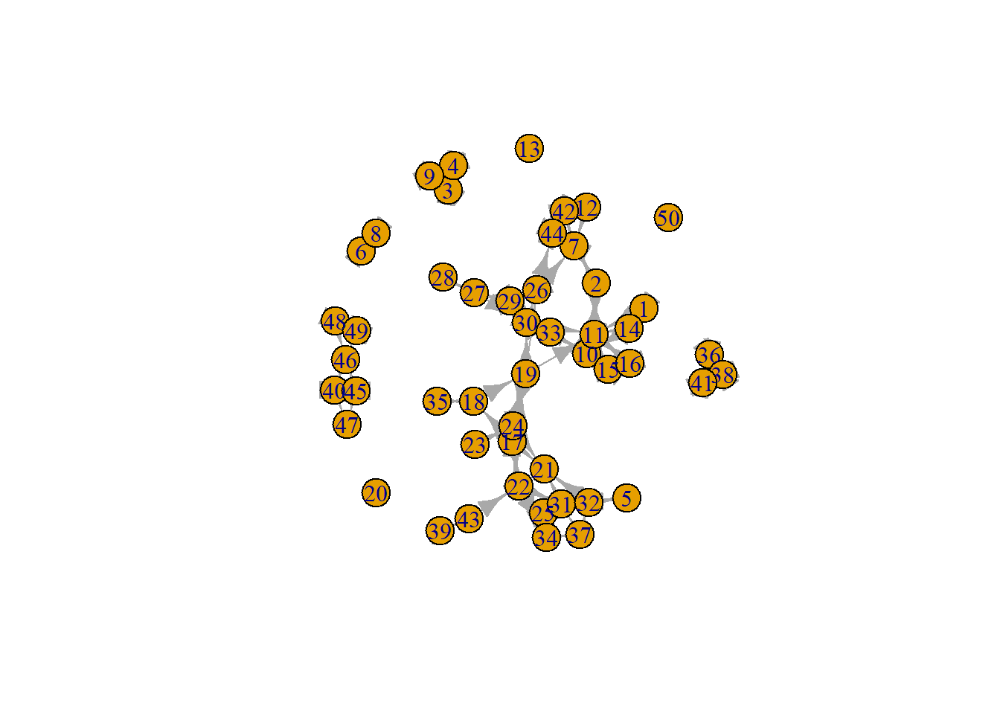

lab2
1 Labjournal Week 2
##
## Attaching package: 'igraph'## The following objects are masked from 'package:stats':
##
## decompose, spectrum## The following object is masked from 'package:base':
##
## union## ── Attaching core tidyverse packages ─────────── tidyverse 2.0.0 ──
## ✔ dplyr 1.2.1 ✔ readr 2.1.6
## ✔ forcats 1.0.1 ✔ stringr 1.6.0
## ✔ ggplot2 4.0.0 ✔ tibble 3.3.0
## ✔ lubridate 1.9.5 ✔ tidyr 1.3.2
## ✔ purrr 1.1.0
## ── Conflicts ───────────────────────────── tidyverse_conflicts() ──
## ✖ lubridate::%--%() masks igraph::%--%()
## ✖ dplyr::as_data_frame() masks tibble::as_data_frame(), igraph::as_data_frame()
## ✖ purrr::compose() masks igraph::compose()
## ✖ tidyr::crossing() masks igraph::crossing()
## ✖ dplyr::filter() masks stats::filter()
## ✖ dplyr::lag() masks stats::lag()
## ✖ purrr::simplify() masks igraph::simplify()
## ℹ Use the conflicted package (<http://conflicted.r-lib.org/>) to force all conflicts to become errors1.1 Load Networks s501 & s502
# s501
# s502
# ?s501 1.2 Inspect Network s501
View(s501)
class(s501)## [1] "matrix" "array"str(s501)## int [1:50, 1:50] 0 0 0 0 0 0 0 0 0 0 ...
## - attr(*, "dimnames")=List of 2
## ..$ : chr [1:50] "1" "2" "3" "4" ...
## ..$ : chr [1:50] "V1" "V2" "V3" "V4" ...s501_copy <- s501
# Wie is bevriend met wie?
# Hoeveel vrienden hebben mensen?
# Met hoeveel mensen is iemand bevriend?
# ?graph_from_adjacency_matrix()
# ?from_adjacency()1.3 Descriptives
friends_nominated <- rowSums(s501_copy) # nr of times someone has been nominated
friends_has <- colSums(s501_copy) # nr of friends someone has answered
View(friends_nominated)
View(friends_has)
table(friends_nominated)## friends_nominated
## 0 1 2 3 4 5
## 4 8 17 15 4 2table(friends_has)## friends_has
## 0 1 2 3 4 5 8
## 4 13 16 8 4 4 1barplot(friends_nominated)
barplot(friends_has)
prop.table(table(friends_nominated))## friends_nominated
## 0 1 2 3 4 5
## 0.08 0.16 0.34 0.30 0.08 0.04prop.table(table(friends_has))## friends_has
## 0 1 2 3 4 5 8
## 0.08 0.26 0.32 0.16 0.08 0.08 0.02barplot(s501_copy[1,]) # for respondent one
network <- graph_from_adjacency_matrix(
s501_copy,
mode = c("directed"),
weighted = NULL,
diag = FALSE,
add.colnames = NA,
add.rownames = NA
)
plot(network) # graphic overview of someone's network (rough)
1.4 Calculate Clustering
Tutorial, Chapter 4, 4.3.2.5 Clustering
People lump together in separate groups
The clustering coefficient for vi is defined as
The observed ties between all direct neighbors of vi via an ingoing and/or outgoing relation
Divided by all possible ties between all direct neighbors of vi
ki are the number of neighbors of vi
∑ejk are the number of edges between these neighbors
The local clustering coefficient is CC(vi) = ∑ejk / ki∗(ki−1)
For undirected networks, the clustering coefficient is the same as the transitivity index
The number of transitive triads divided by all possible transitive triads
This does not appply to directed networks
Formula
\[CC(vi) = ∑ejk / ki∗(ki−1)\]
1.5 Clustering coefficient in R
Use the transitivity() function? For more information: https://r.igraph.org/reference/transitivity.html
“Transitivity measures the probability that the adjacent vertices of a vertex are connected. This is sometimes also called the clustering coefficient.”
I am not sure if this function fits, as k it’s for undirected networks (in which relationships are mutual)
“The global transitivity of an undirected graph. This is simply the ratio of the count of triangles and connected triples in the graph. In directed graphs, edge directions are ignored”
Other types are possible, but they are all undirected
Q: on Stack Overflow someone says the global CC is the same for directed and undirected networks; how does that work? https://stackoverflow.com/questions/68897940/how-can-i-calculate-the-cluster-coefficients-of-a-directed-graph-in-r
?transitivity()
# Check if s501 is an undirected or directed network
for (i in 1:nrow(s501)) {
if (sum(s501[i,]) == sum(s501[,i])) {
print(paste0("participant ",
i,
": ",
"equal number friends mentioned & mentioned as friend"))
} else {
print(paste0("participant ",
i,
": ",
"numbers differ"))
}
}## [1] "participant 1: numbers differ"
## [1] "participant 2: equal number friends mentioned & mentioned as friend"
## [1] "participant 3: equal number friends mentioned & mentioned as friend"
## [1] "participant 4: equal number friends mentioned & mentioned as friend"
## [1] "participant 5: equal number friends mentioned & mentioned as friend"
## [1] "participant 6: equal number friends mentioned & mentioned as friend"
## [1] "participant 7: numbers differ"
## [1] "participant 8: equal number friends mentioned & mentioned as friend"
## [1] "participant 9: equal number friends mentioned & mentioned as friend"
## [1] "participant 10: equal number friends mentioned & mentioned as friend"
## [1] "participant 11: numbers differ"
## [1] "participant 12: numbers differ"
## [1] "participant 13: equal number friends mentioned & mentioned as friend"
## [1] "participant 14: numbers differ"
## [1] "participant 15: equal number friends mentioned & mentioned as friend"
## [1] "participant 16: equal number friends mentioned & mentioned as friend"
## [1] "participant 17: numbers differ"
## [1] "participant 18: equal number friends mentioned & mentioned as friend"
## [1] "participant 19: numbers differ"
## [1] "participant 20: equal number friends mentioned & mentioned as friend"
## [1] "participant 21: numbers differ"
## [1] "participant 22: numbers differ"
## [1] "participant 23: equal number friends mentioned & mentioned as friend"
## [1] "participant 24: numbers differ"
## [1] "participant 25: numbers differ"
## [1] "participant 26: equal number friends mentioned & mentioned as friend"
## [1] "participant 27: numbers differ"
## [1] "participant 28: equal number friends mentioned & mentioned as friend"
## [1] "participant 29: equal number friends mentioned & mentioned as friend"
## [1] "participant 30: equal number friends mentioned & mentioned as friend"
## [1] "participant 31: numbers differ"
## [1] "participant 32: equal number friends mentioned & mentioned as friend"
## [1] "participant 33: numbers differ"
## [1] "participant 34: equal number friends mentioned & mentioned as friend"
## [1] "participant 35: equal number friends mentioned & mentioned as friend"
## [1] "participant 36: equal number friends mentioned & mentioned as friend"
## [1] "participant 37: numbers differ"
## [1] "participant 38: equal number friends mentioned & mentioned as friend"
## [1] "participant 39: equal number friends mentioned & mentioned as friend"
## [1] "participant 40: numbers differ"
## [1] "participant 41: equal number friends mentioned & mentioned as friend"
## [1] "participant 42: numbers differ"
## [1] "participant 43: numbers differ"
## [1] "participant 44: numbers differ"
## [1] "participant 45: numbers differ"
## [1] "participant 46: numbers differ"
## [1] "participant 47: numbers differ"
## [1] "participant 48: numbers differ"
## [1] "participant 49: equal number friends mentioned & mentioned as friend"
## [1] "participant 50: equal number friends mentioned & mentioned as friend"# since these values differ, it's not an undirected network
# A can nominate B as friend, without being nominated back (= non symmetrical)
transitivity(network) # 0.4229075 (but what does this number say? nothing, i think)## [1] 0.42290751.6 DirectedClustering package
# install.packages("DirectedClustering")
library(DirectedClustering)
ClustBCG(mat = s501_copy, type = "directed") # = 0.3994831## $cycleCC
## [,1]
## 1 0.00000000
## 2 0.00000000
## 3 1.00000000
## 4 1.00000000
## 5 0.00000000
## 6 0.00000000
## 7 0.16666667
## 8 0.00000000
## 9 1.00000000
## 10 0.14285714
## 11 0.14285714
## 12 0.00000000
## 13 0.00000000
## 14 0.00000000
## 15 0.50000000
## 16 1.00000000
## 17 0.37500000
## 18 0.00000000
## 19 0.09090909
## 20 0.00000000
## 21 0.50000000
## 22 0.22222222
## 23 0.00000000
## 24 0.16666667
## 25 1.00000000
## 26 0.12500000
## 27 0.00000000
## 28 0.00000000
## 29 0.28571429
## 30 0.14285714
## 31 0.30769231
## 32 0.15384615
## 33 0.25000000
## 34 0.00000000
## 35 0.00000000
## 36 1.00000000
## 37 0.25000000
## 38 1.00000000
## 39 0.00000000
## 40 0.50000000
## 41 1.00000000
## 42 0.50000000
## 43 0.00000000
## 44 0.33333333
## 45 0.50000000
## 46 0.33333333
## 47 0.00000000
## 48 1.00000000
## 49 0.50000000
## 50 0.00000000
##
## $middlemanCC
## [,1]
## 1 1.00000000
## 2 0.00000000
## 3 1.00000000
## 4 1.00000000
## 5 0.00000000
## 6 0.00000000
## 7 0.41666667
## 8 0.00000000
## 9 1.00000000
## 10 0.28571429
## 11 0.14285714
## 12 0.00000000
## 13 0.00000000
## 14 0.50000000
## 15 0.50000000
## 16 1.00000000
## 17 0.50000000
## 18 0.33333333
## 19 0.09090909
## 20 0.00000000
## 21 0.50000000
## 22 0.22222222
## 23 0.00000000
## 24 0.25000000
## 25 0.50000000
## 26 0.12500000
## 27 0.00000000
## 28 0.00000000
## 29 0.42857143
## 30 0.35714286
## 31 0.30769231
## 32 0.23076923
## 33 0.25000000
## 34 0.66666667
## 35 0.00000000
## 36 1.00000000
## 37 0.50000000
## 38 1.00000000
## 39 0.00000000
## 40 0.75000000
## 41 1.00000000
## 42 1.00000000
## 43 0.00000000
## 44 0.83333333
## 45 0.75000000
## 46 0.33333333
## 47 0.00000000
## 48 1.00000000
## 49 0.50000000
## 50 0.00000000
##
## $inCC
## [,1]
## V1 0.0000000
## V2 0.0000000
## V3 1.0000000
## V4 1.0000000
## V5 0.0000000
## V6 0.0000000
## V7 0.2500000
## V8 0.0000000
## V9 1.0000000
## V10 0.0000000
## V11 0.1428571
## V12 0.0000000
## V13 0.0000000
## V14 0.0000000
## V15 0.5000000
## V16 1.0000000
## V17 0.5000000
## V18 0.0000000
## V19 0.5000000
## V20 0.0000000
## V21 0.4000000
## V22 0.2000000
## V23 0.0000000
## V24 0.1666667
## V25 0.0000000
## V26 0.5000000
## V27 0.0000000
## V28 0.0000000
## V29 0.3333333
## V30 0.1666667
## V31 0.3500000
## V32 0.2500000
## V33 0.3333333
## V34 0.0000000
## V35 0.0000000
## V36 1.0000000
## V37 0.0000000
## V38 1.0000000
## V39 0.0000000
## V40 1.0000000
## V41 1.0000000
## V42 0.6666667
## V43 0.0000000
## V44 0.4166667
## V45 1.0000000
## V46 0.3333333
## V47 1.0000000
## V48 0.0000000
## V49 0.5000000
## V50 0.0000000
##
## $outCC
## [,1]
## 1 0.5000000
## 2 0.0000000
## 3 1.0000000
## 4 1.0000000
## 5 0.0000000
## 6 0.0000000
## 7 0.3333333
## 8 0.0000000
## 9 1.0000000
## 10 0.3333333
## 11 0.3333333
## 12 1.0000000
## 13 0.0000000
## 14 0.3333333
## 15 0.5000000
## 16 1.0000000
## 17 0.3500000
## 18 0.0000000
## 19 0.1666667
## 20 0.0000000
## 21 0.0000000
## 22 0.2500000
## 23 0.0000000
## 24 0.3000000
## 25 0.5000000
## 26 0.3333333
## 27 0.3333333
## 28 0.0000000
## 29 0.5000000
## 30 0.2500000
## 31 0.3333333
## 32 0.1666667
## 33 0.0000000
## 34 0.5000000
## 35 0.0000000
## 36 1.0000000
## 37 0.5000000
## 38 1.0000000
## 39 0.0000000
## 40 0.5000000
## 41 1.0000000
## 42 1.0000000
## 43 0.0000000
## 44 1.0000000
## 45 0.5000000
## 46 0.3333333
## 47 0.0000000
## 48 1.0000000
## 49 0.5000000
## 50 0.0000000
##
## $totalCC
## [,1]
## V1 0.5000000
## V2 0.0000000
## V3 1.0000000
## V4 1.0000000
## V5 0.0000000
## V6 0.0000000
## V7 0.2800000
## V8 0.0000000
## V9 1.0000000
## V10 0.1923077
## V11 0.1538462
## V12 1.0000000
## V13 0.0000000
## V14 0.3000000
## V15 0.5000000
## V16 1.0000000
## V17 0.3947368
## V18 0.1000000
## V19 0.1750000
## V20 0.0000000
## V21 0.4285714
## V22 0.2205882
## V23 0.0000000
## V24 0.2400000
## V25 0.6000000
## V26 0.2500000
## V27 0.2000000
## V28 0.0000000
## V29 0.3846154
## V30 0.2307692
## V31 0.3269231
## V32 0.2000000
## V33 0.2500000
## V34 0.3000000
## V35 0.0000000
## V36 1.0000000
## V37 0.3750000
## V38 1.0000000
## V39 0.0000000
## V40 0.6250000
## V41 1.0000000
## V42 0.7500000
## V43 0.0000000
## V44 0.5384615
## V45 0.6250000
## V46 0.3333333
## V47 1.0000000
## V48 1.0000000
## V49 0.5000000
## V50 0.0000000
##
## $GlobalcycleCC
## [1] 0.3097791
##
## $GlobalmiddlemanCC
## [1] 0.4054842
##
## $GlobalinCC
## [1] 0.3301905
##
## $GlobaloutCC
## [1] 0.393
##
## $GlobaltotalCC
## [1] 0.3994831# Gives local clustering coefficients for each node
# And the global one, averaged across these nodes
# The LocalCC & GlobalCC are for undirecte networks
# For directed networks, there're four options (Cycle, In, Out, Total)
# https://www.sciencedirect.com/science/article/pii/S1007570424002314
# GlobaltotalCC & totalCC (local)
# ClustF(mat = s501_copy, type = "directed") # = 0.3994831 (same value)1.7 Check with a small network
# ?matrix()
small_matrix <- matrix(data = NA, nrow = 4, ncol = 4, byrow = TRUE)
small_matrix_no_friends <- matrix(data = 0, nrow = 4, ncol = 4, byrow = TRUE)
small_matrix_all_friends <- matrix(data = 1, nrow = 4, ncol = 4, byrow = TRUE)
#View(small_matrix)
#View(small_matrix_no_friends)
#View(small_matrix_all_friends)
ClustF(small_matrix_no_friends, type = "directed") # GlobaltotalCC = 0## $cycleCC
## [,1]
## [1,] 0
## [2,] 0
## [3,] 0
## [4,] 0
##
## $middlemanCC
## [,1]
## [1,] 0
## [2,] 0
## [3,] 0
## [4,] 0
##
## $inCC
## [,1]
## [1,] 0
## [2,] 0
## [3,] 0
## [4,] 0
##
## $outCC
## [,1]
## [1,] 0
## [2,] 0
## [3,] 0
## [4,] 0
##
## $totalCC
## [,1]
## [1,] 0
## [2,] 0
## [3,] 0
## [4,] 0
##
## $GlobalcycleCC
## [1] 0
##
## $GlobalmiddlemanCC
## [1] 0
##
## $GlobalinCC
## [1] 0
##
## $GlobaloutCC
## [1] 0
##
## $GlobaltotalCC
## [1] 0ClustF(small_matrix_all_friends, type = "directed") # GlobaltotalCC = 1## $cycleCC
## [,1]
## [1,] 1
## [2,] 1
## [3,] 1
## [4,] 1
##
## $middlemanCC
## [,1]
## [1,] 1
## [2,] 1
## [3,] 1
## [4,] 1
##
## $inCC
## [,1]
## [1,] 1
## [2,] 1
## [3,] 1
## [4,] 1
##
## $outCC
## [,1]
## [1,] 1
## [2,] 1
## [3,] 1
## [4,] 1
##
## $totalCC
## [,1]
## [1,] 1
## [2,] 1
## [3,] 1
## [4,] 1
##
## $GlobalcycleCC
## [1] 1
##
## $GlobalmiddlemanCC
## [1] 1
##
## $GlobalinCC
## [1] 1
##
## $GlobaloutCC
## [1] 1
##
## $GlobaltotalCC
## [1] 1# Let's try a
small_matrix <- matrix(data = c(0,1,1,1,
1,0,0,0,
1,1,0,0,
0,0,1,0), nrow = 4, ncol = 4, byrow = TRUE)
rownames(small_matrix) <- c("p1", "p2", "p3", "p4")
colnames(small_matrix) <- c("p1", "p2", "p3", "p4")
print(small_matrix)## p1 p2 p3 p4
## p1 0 1 1 1
## p2 1 0 0 0
## p3 1 1 0 0
## p4 0 0 1 0?ClustF()
ClustBCG(mat = small_matrix, type = "directed")## $cycleCC
## [,1]
## p1 0.5000000
## p2 1.0000000
## p3 0.6666667
## p4 1.0000000
##
## $middlemanCC
## [,1]
## p1 0.2500000
## p2 1.0000000
## p3 0.3333333
## p4 1.0000000
##
## $inCC
## [,1]
## p1 0.5
## p2 1.0
## p3 0.5
## p4 0.0
##
## $outCC
## [,1]
## p1 0.3333333
## p2 0.0000000
## p3 1.0000000
## p4 0.0000000
##
## $totalCC
## [,1]
## p1 0.375
## p2 1.000
## p3 0.600
## p4 1.000
##
## $GlobalcycleCC
## [1] 0.7916667
##
## $GlobalmiddlemanCC
## [1] 0.6458333
##
## $GlobalinCC
## [1] 0.5
##
## $GlobaloutCC
## [1] 0.3333333
##
## $GlobaltotalCC
## [1] 0.743751.8 By hand
Sum of all the edges between the neighbors of vi
Let’s say participant 1
As participant 1 is friends with participant 2, 3 and 4, we count the ties between them = 2
Next, we calculate the number of neighbors of participant 1 = 3
∑ejk / ki∗(ki−1)
2 / 3*(3-1)
2 / 6 = 0,333
I think this is the out-degree CC?
If we check with the ClusterBCG output for participant 1, that tracks